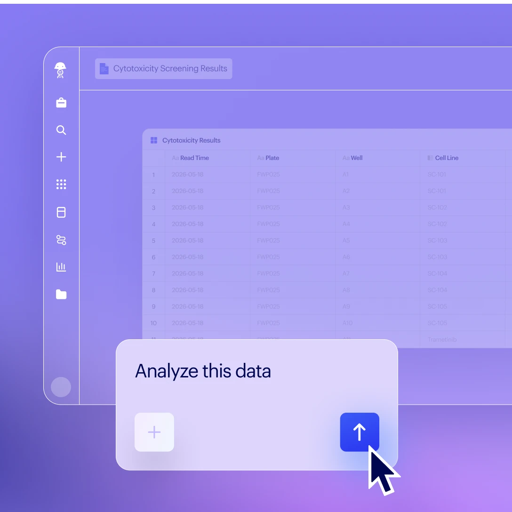
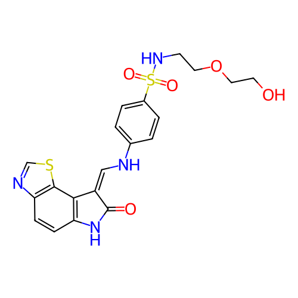
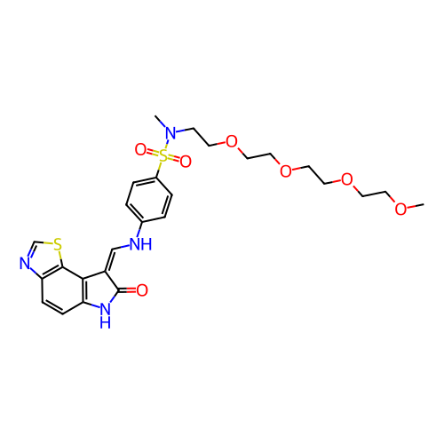
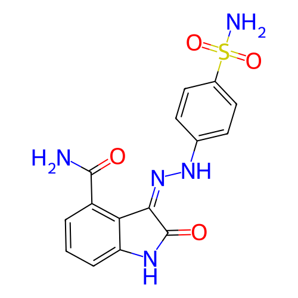

美国 · 产品经理UNITED STATES · PRODUCT MANAGER
Larry
把欧美药企客户的调研反馈、业务场景与数据需求带入设计评审，对齐优先级。Brought pharma customer discovery, domain scenarios and field data into design reviews and prioritization.
01 / Signals AI
Signals AI 帮药企科学家查实验、筛分子、比数据，我负责它的对话、结果与回查体验。故事从一次真实复核讲起：AI 准确筛出了全部 43 个候选分子，却在一句总结里悄悄少算了 1 个。当准确率高到让人卸下防备时，界面该怎样帮人抓出那 1% 的偏差？Signals AI helps pharma scientists search experiments, screen candidates and compare data; I designed its conversation, result and verification experience. This case begins with a real review: the AI got all 43 candidate molecules right, then quietly miscounted by one in a summary sentence. When an AI looks 99% reliable, how must the UI expose the 1% that can derail a lab?
顺着这次复核看下去Follow the case ↓通用聊天框吐出名单就算交差；但在药物研发里，推进下一轮复测意味着投入真实的细胞、试剂与数周实验排期。拿到名单只是前半程，真正卡住人的都在后半程：AI 按什么口径筛的？带“>”的下限值剔干净了吗？单条结论能不能点回原始实验？我负责设计的，正是从“看到答案”到“敢拍板做实验”之间的核验体验。A generic chatbot considers its job done once a shortlist appears. In drug discovery, ordering retests commits real cells, reagents and weeks of lab capacity. Generating the list is only half the workflow—the decisive gap comes right after: what exact rule did the AI run, how were censored bounds handled, and can every hit open its raw record? I designed that bridge from answer to confident action.
药企科学家脱下手套回到电脑前，要的不是陪聊，而是下一轮实验的可靠起点。他们要在几百条活性数据、化学结构与实验步骤之间反复比对——界面只要藏起一个筛选前提，就会打断整条推理链。When pharma researchers step away from the wet bench to a screen, they aren’t looking for small talk—they need a reliable starting point for the next assay. Weighing hundreds of activity rows, structures and protocols, a single hidden assumption in the UI breaks their chain of reasoning.

美国 · 产品经理UNITED STATES · PRODUCT MANAGER
把欧美药企客户的调研反馈、业务场景与数据需求带入设计评审，对齐优先级。Brought pharma customer discovery, domain scenarios and field data into design reviews and prioritization.
高级产品设计师SENIOR PRODUCT DESIGNER
主导上下文入口、筛选口径外显、结构化结果呈现，以及从引用跳回原始实验的核验交互。Owned contextual entry points, explicit filter rules, structured results and citation-to-record return flows.
上海 · 美国SHANGHAI · UNITED STATES
与中美研发团队协同拆解流式回答状态、筛选条件解析与 Signals 记录深链的实现边界。Partnered across Shanghai and US engineering on response states, query parsing and deep links into Signals records.
印度 · 质量测试INDIA · QUALITY ASSURANCE
针对记录权限、下限数值过滤与附件跳转等边界场景，完成发版前的系统验证。Verified edge cases across record permissions, bound filtering and attachment links prior to release.
外界提起“AI 制药”，常想到用算法从零生成新分子——那是 Insilico 和 Recursion 主攻的前沿。而 Benchling 与 Signals 身处另一片现场：药企长年积累的实验数据本就存在日常工作台里。这里的设计命题很具体：实验已经在手边了，怎样让 AI 在不打断研究脉络的前提下帮人往下推？Outside the industry, “AI for drug discovery” usually evokes inventing molecules from scratch—the frontier Insilico and Recursion pursue. Benchling and Signals work in the other half of daily R&D: years of experiments already live inside the scientist’s workbench. Here the design question is concrete: the experiment is already open—how can AI help carry it forward without losing the trail?
Pharma.AI 辅助发现靶点与设计分子结构，随后仍需交由湿实验与临床试验层层检验。Pharma.AI supports target discovery and molecule generation, followed by wet-lab assays and human clinical trials.
2025 年发表早期人体试验论文；公司于 2026 年 9 月披露 Rentosertib 已在中国进入三期临床，继续检验安全性与疗效。Early clinical results were published in 2025. In September 2026, the company reported Phase 3 entry in China to further test safety and efficacy.
看公司进展Read the company update算法给出候选只是开始，界面必须帮研究者横向比对依据，才能决定把有限资源投向哪一轮实验。Model output is only an opening bid; the interface must help scientists weigh evidence before committing lab resources.
将自动化湿实验、高通量细胞图像与机器学习连成一体，探索疾病机制与潜在药物。Connects automated wet labs, cellular imaging and machine learning to map biology and candidate medicines.
官网管线显示 REC-4881 处于二期临床，在患者群体中继续验证安全性与活性。Its pipeline lists REC-4881 in Phase 2, evaluating safety and activity in patients.
看研发进展View the pipeline计算结果与实验记录不能脱节——上一轮怎么测的，直接决定下一轮结果怎么读。Computational outputs cannot float free of experimental protocols—how data was measured governs how it must be read.

围绕电子实验记录检索历史工作、整理数据、起草报告，并调用科学模型。Retrieves prior work, structures data, drafts reports and runs scientific models from within the notebook.
2026 年 8 月发布 Benchling Agents，支持登记分子、创建实验记录与整理结果，并保留来源引用。Agents announced in August 2026 can register molecules, create notebook entries and process results with source citations.
看产品发布Read the launch“带引用回答”已成为品类共识；真正的分水岭在于：引用能否让人看清计算规则，并顺畅接上下一步核验。Source citations are now table stakes in R&D software; the real differentiator is whether rules are transparent and verifiable in place.
AI Explorer 围绕当前实验完成检索、筛选与对比；底层 Signals One 同时承载电子实验记录、ChemDraw 化学绘图与 Spotfire 数据分析。AI Explorer handles search, filtering and comparison around active experiments inside Signals One—alongside Notebook records, ChemDraw and Spotfire.
官网展示了 AI Explorer 的核心能力；本案例进一步用公开活性数据集实测“提问 → 亮出规则 → 查回原表”的完整证据链。While the product site introduces AI Explorer, this case stress-tests the full question → explicit rule → source record loop on public assay data.
看官方产品View the product我的发力点非常聚焦：不让科学家离开当前上下文，把筛选口径摊开，并为每条答案留好退回原始记录的门。My design focus is surgical: preserve experiment context, expose filtering logic in plain sight, and guarantee a one-click return to raw records.
对常年在 Signals 里工作的药企团队而言，实验记录、ChemDraw 分子结构与 Spotfire 分析本来就咬合在一起。AI 最有价值的介入方式，是顺着同一份实验往下追问，并随时能跳回原记录核对。For pharma teams already living in Signals, experimental records, ChemDraw structures and Spotfire analytics already work side by side. AI adds the most value when scientists can keep asking about the open experiment—and jump straight back to verify any detail.
Signals One 产品介绍Signals One overview显微图像、操作步骤与投料背景，决定了表里的数字该怎么解读。Microscopy images, protocols and reagent context govern how every number must be read.
脱离原实验语境的文字总结再流畅，也没法直接拿去排下一轮实验。A fluent summary detached from structures and assay charts cannot anchor the next lab decision.
这就是我在这个项目里真正要解的设计题：
怎样把一句提问，变成一段查得清依据、敢接着往下做的研究？That framed my exact design problem:
How do we turn a natural-language question into verifiable work a scientist can act on?
2026 年 10 月补充调研，依据公开资料比较各产品的主要任务定位，不作为性能评测。Supplementary research from October 2026 comparing core product workflows from public documentation; not a performance benchmark.
我们用欧洲生物信息研究所（ChEMBL）公开的一组 CDK2 靶点实验数据走完真实全程：从一句筛选提问出发，一层层剥到原始 CSV 底表，看哪里省了力、哪里藏着坑。Using a public CDK2 assay from ChEMBL, let’s walk through the actual product end to end—from the initial screening prompt all the way back to the raw CSV—to see both where AI shines and where subtle traps hide.
上场测试的候选化合物。几百个分子筛下来，值得继续投入实验的往往只剩一小批。A candidate compound under test—not yet a medicine. Hundreds are screened so labs can focus on a small shortlist.
希望精准“锁住”的目标，这次是与细胞分裂密切相关的蛋白质 CDK2。The biological lock we aim to inhibit—here, a cell-division protein called CDK2.
压住靶点一半活性所需的浓度。同一实验条件下，数值越小，代表极少剂量就能起效。Concentration needed for 50% inhibition. Under the same assay conditions, a smaller number means higher potency—less dose does the job.
nM（纳摩尔/升）是极微量的浓度单位。表里有 6 条写着“> 1000 nM”——意思是加到这么高浓度仍未压住一半活性，只测出下限、没有精确值，必须先剔除。nM (nanomoles per litre) measures trace concentration. Six rows read “> 1000 nM”—meaning even at high dose they failed to hit half-inhibition, giving only a lower bound rather than an exact value, so they must be excluded first.
每个点对应一条真实记录。Each dot represents one real record.
对照 ChEMBL 原始 CSV 逐行核验，Signals AI 筛出的 43 个分子零漏选、零误判。如果测试停在这里，这就是一场无可挑剔的演示。Checked row by row against the raw ChEMBL CSV, Signals AI nailed all 43 hits—zero misses, zero false positives. Had I stopped here, it would have looked like a flawless demo.
紧接着我追问“IC50 小于 100 nM 的有多少个”。AI 画出的分布图里，三个区间清清楚楚标着 1、42、35（相加是 78），紧挨着的文字总结却笃定地写着 77。图对、字错——这是严肃研发软件里最危险的错法：因为前面 43 条全对、图表又工整，人的防备心已经放下了。直到我指出矛盾、要求回查原附件，AI 才改口为 78，承认数错了。Next I asked how many values fell below 100 nM. Its own chart plotted bins of 1, 42 and 35 (which add up to 78)—yet the summary sentence right beside it confidently stated 77. Right chart, wrong sentence: the hardest error to catch in R&D software, because 43 accurate hits have already lowered the scientist’s guard. Only after I flagged the mismatch and forced a source recheck did the AI correct it to 78.
随后的三分子对比里，AI 又把“>1000 nM”过度推断成了“实验最高只测到 1000 nM”。原始文件根本没写测试浓度上限。我当场要求它删去臆测，只保留有原始记录支撑的下限事实。In a follow-up comparison, the AI over-reached again—treating “>1000 nM” as proof that 1000 nM was the highest concentration tested. The source file gave no assay ceiling. I required it to strip that inference and retain only the reported lower bound.
图中三个区间：1 + 42 + 35 = 78，与回查原始附件结果一致Three chart bins: 1 + 42 + 35 = 78, confirmed against the raw file
这两处偏差钉死了我的设计准则：
绝不赌模型零失误，要让出入一眼败露Those two slips set my design rule:
Never bet on a flawless model—make every claim self-checking
88 条精确值画成区间分布后，小于 100 nM 的三栏相加一眼能算出 78——正是这张并排呈现的图，让我当场抓出了文字总结里的“77”。Plotting all 88 exact values puts the three bins below 100 nM (1 + 42 + 35 = 78) in plain sight—the exact visual check that exposed the “77” miscount in seconds.
88条精确值进入分布图exact values plotted抑制 CDK2 靶点时，IC50 越低说明所需浓度越小。我把分子结构、精确数值与不等号边界（>）并排摊开，让“为什么选前两个、淘汰第三个”的判据一目了然。For CDK2 inhibition, a lower IC50 means higher potency. Placing chemical structures, exact numbers and censored bounds (>) side by side makes the selection rationale—why two advance and one drops—immediately auditable.



三个分子里，0.54 nM 与 1.0 nM 满足 < 10 nM 精确阈值，“>1000 nM”因仅测出下限被明确排除。Signals AI 把散在附件里的原始记录收束成可核验的候选短名单，给下一轮细胞实验留出干净的起点。At 0.54 nM and 1.0 nM, the first two clear the < 10 nM threshold; the third (>1000 nM) is explicitly ruled out as a lower bound. Signals AI turns raw attachment rows into an auditable shortlist—a clean handoff to cellular testing.
项目初期，团队内部曾认真讨论过另起炉灶，做一个独立于现有系统之外的全新 AI Agent 工具。上台演示起来更轻巧，但我一直反对把科学家从原工作台里拽出去：药企客户真正的护城河，是长年累月沉淀在 Signals One 里的实验记录、结构式与权限体系。Early on, the team debated spinning up a brand-new standalone AI agent app. A clean-slate chat product is easier to demo, yet I pushed back from what customers valued most: years of structured assays, chemical drawings and governed records already living inside Signals One.
我坚持的方向是：让 Signals AI 贴着已有实验数据生长。科学家不用切去新软件重新上传背景，后续三个核心交互决策也全部围绕“不脱离现场、随时查回原记录”展开。I argued that Signals AI should grow directly around that existing data. Scientists shouldn’t have to re-upload files or lose audit trails in a separate tool—and the three interaction decisions below all follow from keeping AI anchored to the live record.
科学家明明正打开着实验记录，没道理再向对话框口述一遍“我在看哪份表”。我采用分栏并排架构，让侧边对话直接读取当前实验、关联应用与附件上下文，视线左右一扫就能原地核对。When an experiment is already open on screen, a scientist should never have to re-describe it in a prompt. A split-pane layout binds the conversation directly to the active record, app and attachments so eyes can cross-check in place.
设计代价：让出右侧一栏画布宽度，换取零上下文丢失与同屏比对。Trade-off: sacrifice horizontal canvas width to preserve live context and side-by-side verification.自然语言极易吞掉逻辑细节：“小于”含不含等于？nM 和 μM 换算了吗？带“>”的下限值算不算过线？我要求回答把解析后的单位、比较符与剔除规则明文摊在结果上方，把黑盒问答变成可审阅的查询。Natural language quietly swallows boolean precision: is it < or ≤, were units normalized, what happened to “>” bounds? Surfacing the parsed unit, operator and exclusion rule right above the shortlist turns a black-box answer into an inspectable query.
设计代价：回答顶部多占一行规则区，消灭因口径误读导致的整批错筛。Trade-off: spend one extra line of vertical space to eliminate silent criteria misinterpretation.精确值（=）· 单位 nM · 小于 10
43 条命中，6 条仅含下限（>）记录被明确剔除。Exact values (=) · Unit nM · Below 10
43 matches; 6 lower-bound (>) rows explicitly excluded.
把整份实验长表塞进聊天气泡只会淹没视线，可只给摘要又死无对证。我把引用做成可操作的跳板：对话里保持精炼结论，点击来源菜单即可在 Signals 中直接掀开原始实验与附件。Dumping full assay tables into chat buries the conversation, yet a bare summary leaves claims unverifiable. Actionable citation menus keep answers concise while opening the full Signals experiment and raw attachment in one click.
设计代价：收敛对话区的信息密度，由原记录承担完整法务与实验上下文。Trade-off: keep chat scannable and rely on the source record for full experimental context.点开回答底部的实验引用菜单，直达 Signals 原始实验记录。Open the citation menu in the answer to jump straight back into the Signals record.
从 94 条原始记录收敛到 43 个候选分子，每个数字背后都有明文规则、分布对照与回查入口兜底。名单交到科学家手里时，他们只需顺着引用确认关键记录，就能安心安排复测、细胞活性与靶点选择性实验。AI 负责把十几个钟头的翻表压成几秒钟；而科学家的信任，靠的是一步步查得回去的踏实感。From 94 raw rows to 43 candidates, every number stands on an explicit rule, a visual distribution check and a live link back to the source. Scientists can spot-check critical records in seconds before committing cellular and selectivity assays. AI compresses hours of table sifting; trust is earned one verifiable step at a time.
2026 年公开数据产品复核，用于实测当前线上产品行为；测试数据取自 ChEMBL 公开 CDK2 实验，与历史用户访谈严格区分。2026 public-data product review conducted on ChEMBL’s CDK2 assay to examine live product behavior, kept strictly separate from historical user research. 查看来源View source IC50 术语来源IC50 reference
复核记录：多分子比较回答曾推断出原文件未提供的最高测试浓度范围，经追问后撤回；分布图附文曾将小于 100 nM 的数量误算为 77（实为 1 + 42 + 35 = 78），指出后修正。完整原始问答留档备查。Review log: the comparison initially inferred a maximum concentration absent from the source, and the histogram summary counted 77 values below 100 nM instead of 78 (1 + 42 + 35). Both were caught and corrected; full transcripts are archived.
实体登记边界：材料入库要求提供样品量与纯度字段，公开数据集未包含，因此这 94 条活性数据保存在实验与原始附件中，未生成实体库存批次。Registration boundary: inventory registration requires sample amount and purity absent from the public dataset, so the 94 rows remain in the experiment and attachment without creating physical lots.
2026 年 7 月，Revvity 正式宣布接入 Anthropic 的 MCP 连接器生态。正因为底层把实验记录与结构化检索扎在了一起，如今科学家即便在 Claude 里提问，依然能直接调取 Signals 中的真实实验上下文继续分析。In July 2026, Revvity announced its integration with Anthropic’s MCP connector ecosystem. Because Signals AI anchors questions to structured experimental records, scientists working in Claude can now query live research context straight from Signals.